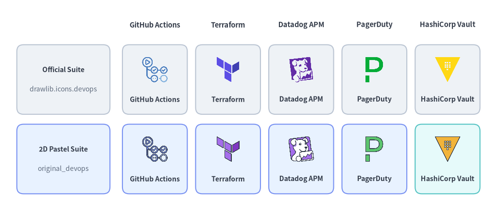
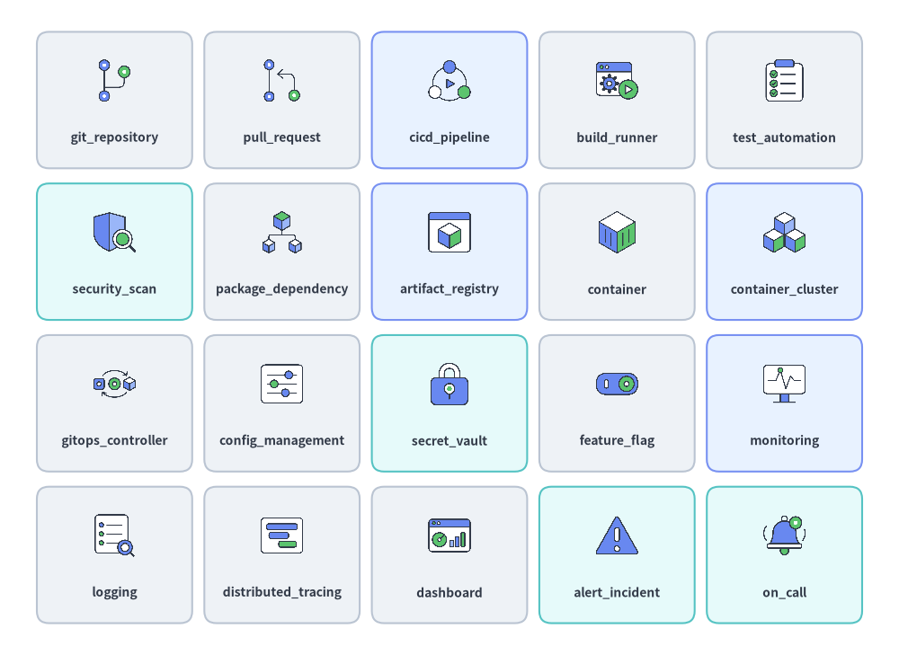
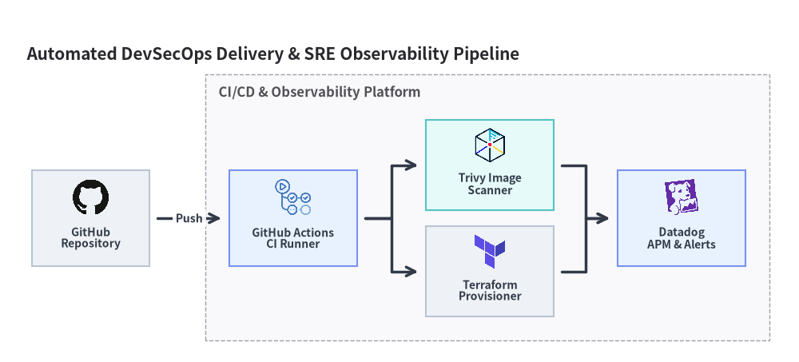

DevOps & Observability Icons
Drawlib provides 58 official DevOps & Observability brand icons in drawlib.icons.devops (DevopsIcon) and 78 flat 2D pastel icons in drawlib.icons.original_devops (OriginalDevopsIcon), which combine 58 matching brand twins with 20 vendor-neutral DevOps concept icons. Use these icons directly on the canvas or inside Architecture Diagrams (see Icons Overview).

Source Code
from drawlib.canvas import save, setup
from drawlib.icons import devops, original_devops
from drawlib.shapes import rectangle
from drawlib.styles import Styles
from drawlib.text import text
setup(width=146, height=64)
columns = [
("GitHub Actions", devops.github_actions, original_devops.github_actions),
("Terraform", devops.terraform, original_devops.terraform),
("Datadog APM", devops.datadog, original_devops.datadog),
("PagerDuty", devops.pagerduty, original_devops.pagerduty),
("HashiCorp Vault", devops.vault, original_devops.vault),
]
rows = [
(40.0, "Official Suite", "drawlib.icons.devops", Styles.Neutral),
(16.0, "2D Pastel Suite", "original_devops", Styles.PrimaryNeutral),
]
for col_idx, (col_title, _, _) in enumerate(columns):
cx = 46.5 + col_idx * 22.0
text((cx, 56.5), col_title, style=Styles.DarkBold.patch(text_size=10.5))
for row_idx, (cy, row_title, row_sub, card_st) in enumerate(rows):
rectangle((19.0, cy), width=28.0, height=21.0, style=card_st.patch(shape_r=2))
text((19.0, cy + 3.0), row_title, style=Styles.DarkBold.patch(text_size=10.0))
text((19.0, cy - 3.0), row_sub, style=Styles.Muted.patch(text_size=10.0))
for col_idx, (lbl, fn_off, fn_orig) in enumerate(columns):
cx = 46.5 + col_idx * 22.0
cell_st = Styles.SecondaryNeutral if (row_idx == 1 and col_idx == 4) else card_st
rectangle((cx, cy), width=19.5, height=21.0, style=cell_st.patch(shape_r=2))
fn = fn_off if row_idx == 0 else fn_orig
fn((cx, cy + 3.0), width=8.5, style=Styles.Primary)
text((cx, cy - 6.0), lbl, style=Styles.DarkBold.patch(text_size=10.0))
save()
1. API Signature & Twin Module Structure
All 58 brand icons in drawlib.icons.devops have an exact 1-to-1 twin in drawlib.icons.original_devops, while original_devops adds 20 vendor-neutral DevOps concept icons (such as cicd_pipeline, build_runner, monitoring, and alert_incident) for trademark-free diagrams:
from drawlib.diagrams.architecture import DevopsIcon, Node, OriginalDevopsIcon
from drawlib.icons import devops, original_devops
from drawlib.styles import Styles
# 1. Direct canvas rendering (anchored at center xy)
devops.terraform((30, 25), width=10.0, style=Styles.Primary)
original_devops.terraform((60, 25), width=10.0, style=Styles.Primary)
original_devops.cicd_pipeline((90, 25), width=10.0, style=Styles.Primary)
# 2. High-level ArchitectureDiagram Node integration via Enum
iac_node = Node("Terraform IaC", icon=DevopsIcon.TERRAFORM, icon_size=8.0)
pipe_node = Node("CI/CD Pipeline", icon=OriginalDevopsIcon.CICD_PIPELINE, icon_size=8.0)
| Feature | Official Suite (devops) |
Original 2D Pastel Suite (original_devops) |
|---|---|---|
| Module Import | from drawlib.icons import devops |
from drawlib.icons import original_devops |
| Function Signature | devops.<name>(xy, width, *, style, variant="default") |
original_devops.<name>(xy, width, *, style, variant="default") |
| Architecture Enum | DevopsIcon.<NAME> |
OriginalDevopsIcon.<NAME> |
| Canonical Count | 58 (58 official DevOps & SRE brand logos) |
78 (58 2D pastel brand twins + 20 DevOps concept icons) |
| Asset Archive | icon_devops (512×512 RGBA PNGs) |
icon_original_devops (512×512 RGBA PNGs) |
2. DevOps & Observability Brand Icons (58 Icons)
The 58 brand icons span Git platforms, CI/CD runners, Infrastructure as Code (IaC), APM & log aggregation stacks, incident paging, and DevSecOps scanners:
Source Code
from drawlib.canvas import save, setup
from drawlib.icons import devops
from drawlib.shapes import rectangle
from drawlib.styles import Styles
from drawlib.text import text
setup(width=144, height=64)
row1 = [
("github", "Source Control", devops.github, Styles.Neutral),
("gitlab", "DevSecOps CI", devops.gitlab, Styles.PrimaryNeutral),
("terraform", "IaC Provision", devops.terraform, Styles.Neutral),
("ansible", "Config Mgmt", devops.ansible, Styles.Neutral),
("pulumi", "Cloud IaC", devops.pulumi, Styles.SecondaryNeutral),
]
row2 = [
("datadog", "APM & Logs", devops.datadog, Styles.PrimaryNeutral),
("loki", "Log Aggregation", devops.loki, Styles.Neutral),
("sentry", "Error Tracking", devops.sentry, Styles.Neutral),
("playwright", "E2E Testing", devops.playwright, Styles.SecondaryNeutral),
("trivy", "Image Scanner", devops.trivy, Styles.Neutral),
]
for row_idx, items in enumerate([row1, row2]):
cy = 46.5 if row_idx == 0 else 17.5
for col_idx, (title, cat, icon_fn, card_st) in enumerate(items):
cx = 18.0 + col_idx * 27.0
rectangle((cx, cy), width=24.5, height=25.0, style=card_st.patch(shape_r=2))
icon_fn((cx, cy + 4.5), width=8.5, style=Styles.Primary)
text((cx, cy - 3.5), title, style=Styles.DarkBold.patch(text_size=10.0))
text((cx, cy - 8.2), cat, style=Styles.Muted.patch(text_size=10.0))
save()
2.1. Complete DevOps Brand Icons Reference (58 Canonical Names)
All 58 canonical brand names below are available in both devops.<name> (DevopsIcon.<NAME>) and original_devops.<name> (OriginalDevopsIcon.<NAME>):
| Category | Count | Canonical Icon Names (devops.* & original_devops.*) |
|---|---|---|
| Source Control, CI/CD Pipelines & Build Systems | 14 | bazel, bitbucket, buildkite, circleci, dagger, git, github, github_actions, gitlab, jenkins, nx, spinnaker, tekton, turborepo |
| Infrastructure as Code (IaC), Configuration & Containers | 9 | ansible, consul, opentofu, packer, podman, pulumi, terraform, vagrant, vault |
| Observability, APM, Logging & Metrics | 15 | datadog, dynatrace, fluent_bit, honeycomb, kibana, loki, mimir, new_relic, sentry, signoz, splunk, tempo, thanos, vector, victoria_metrics |
| Incident Management, Feature Flags & ChatOps | 7 | incident_io, jira, launchdarkly, opsgenie, pagerduty, slack, unleash |
| Testing, API Clients, Artifact Registries & DevSecOps | 13 | bruno, cypress, insomnia, jfrog, k6, keycloak, nexus, playwright, postman, selenium, snyk, sonarqube, trivy |
3. Vendor-Neutral DevOps Concept Icons (original_devops — 20 Icons)
When designing vendor-neutral CI/CD pipelines or SRE runbooks without specific vendor logos, drawlib.icons.original_devops (OriginalDevopsIcon) provides 20 general-purpose DevOps & SRE concept icons:

Source Code
from drawlib.canvas import save, setup
from drawlib.icons import original_devops
from drawlib.shapes import rectangle
from drawlib.styles import Styles
from drawlib.text import text
setup(width=148, height=108)
concept_items = [
("git_repository", original_devops.git_repository, Styles.Neutral),
("pull_request", original_devops.pull_request, Styles.Neutral),
("cicd_pipeline", original_devops.cicd_pipeline, Styles.PrimaryNeutral),
("build_runner", original_devops.build_runner, Styles.Neutral),
("test_automation", original_devops.test_automation, Styles.Neutral),
("security_scan", original_devops.security_scan, Styles.SecondaryNeutral),
("package_dependency", original_devops.package_dependency, Styles.Neutral),
("artifact_registry", original_devops.artifact_registry, Styles.PrimaryNeutral),
("container", original_devops.container, Styles.Neutral),
("container_cluster", original_devops.container_cluster, Styles.PrimaryNeutral),
("gitops_controller", original_devops.gitops_controller, Styles.Neutral),
("config_management", original_devops.config_management, Styles.Neutral),
("secret_vault", original_devops.secret_vault, Styles.SecondaryNeutral),
("feature_flag", original_devops.feature_flag, Styles.Neutral),
("monitoring", original_devops.monitoring, Styles.PrimaryNeutral),
("logging", original_devops.logging, Styles.Neutral),
("distributed_tracing", original_devops.distributed_tracing, Styles.Neutral),
("dashboard", original_devops.dashboard, Styles.Neutral),
("alert_incident", original_devops.alert_incident, Styles.SecondaryNeutral),
("on_call", original_devops.on_call, Styles.SecondaryNeutral),
]
for idx, (label, icon_fn, card_st) in enumerate(concept_items):
row = idx // 5
col = idx % 5
cx = 18.8 + col * 27.6
cy = 91.5 - row * 25.0
rectangle((cx, cy), width=25.6, height=22.5, style=card_st.patch(shape_r=2))
icon_fn((cx, cy + 3.2), width=7.8, style=Styles.Primary)
text((cx, cy - 6.2), label, style=Styles.DarkBold.patch(text_size=10.0))
save()
3.1. Complete DevOps Concept Icons Reference (20 Canonical Names in original_devops)
| Canonical Name | original_devops Call |
OriginalDevopsIcon Enum |
Architectural Role & Concept Description |
|---|---|---|---|
alert_incident |
original_devops.alert_incident |
ALERT_INCIDENT |
Critical threshold breach or active production incident alert |
artifact_registry |
original_devops.artifact_registry |
ARTIFACT_REGISTRY |
Container image, Helm chart, or binary package repository |
build_runner |
original_devops.build_runner |
BUILD_RUNNER |
Ephemeral CI compilation worker or build agent |
cicd_pipeline |
original_devops.cicd_pipeline |
CICD_PIPELINE |
Automated continuous integration and delivery workflow |
config_management |
original_devops.config_management |
CONFIG_MANAGEMENT |
Declarative infrastructure state and host configuration |
container |
original_devops.container |
CONTAINER |
Standardized OCI application container image/instance |
container_cluster |
original_devops.container_cluster |
CONTAINER_CLUSTER |
Orchestrated multi-node container cluster |
dashboard |
original_devops.dashboard |
DASHBOARD |
Real-time SLI/SLO operational metrics visualization |
distributed_tracing |
original_devops.distributed_tracing |
DISTRIBUTED_TRACING |
End-to-end microservice request span & latency trace |
feature_flag |
original_devops.feature_flag |
FEATURE_FLAG |
Runtime progressive delivery toggle & canary release gate |
git_repository |
original_devops.git_repository |
GIT_REPOSITORY |
Version-controlled source code and IaC repository |
gitops_controller |
original_devops.gitops_controller |
GITOPS_CONTROLLER |
Continuous reconciliation loop syncing Git state to clusters |
logging |
original_devops.logging |
LOGGING |
Centralized structured log ingestion and indexing |
monitoring |
original_devops.monitoring |
MONITORING |
Time-series metric collection, health checks, and probing |
on_call |
original_devops.on_call |
ON_CALL |
SRE incident response rotation and paging escalation |
package_dependency |
original_devops.package_dependency |
PACKAGE_DEPENDENCY |
Software Bill of Materials (SBOM) & library dependency tree |
pull_request |
original_devops.pull_request |
PULL_REQUEST |
Code review, branch merge gate, and automated status checks |
secret_vault |
original_devops.secret_vault |
SECRET_VAULT |
Encrypted secrets manager, KMS key store, and token broker |
security_scan |
original_devops.security_scan |
SECURITY_SCAN |
SAST/DAST vulnerability & container image scanning stage |
test_automation |
original_devops.test_automation |
TEST_AUTOMATION |
Automated unit, integration, and E2E regression test suite |
4. Practical Architecture Diagram (DevopsIcon & OriginalDevopsIcon)
The following ArchitectureDiagram illustrates an automated DevSecOps delivery and observability pipeline using DevopsIcon:
from drawlib.canvas import save, setup
from drawlib.diagrams.architecture import ArchitectureDiagram, DevopsIcon, Node, NodeGroup
from drawlib.styles import Styles
setup(width=150, height=68)
d = ArchitectureDiagram(
node_style=Styles.Primary,
node_text_style=Styles.DarkBold.patch(text_size=10.0),
edge_style=Styles.DarkBold,
edge_text_style=Styles.DarkBold.patch(text_size=10.0),
node_card_style=Styles.Neutral,
title="Automated DevSecOps Delivery & SRE Observability Pipeline",
)
gh = d.add(
Node(
"GitHub\nRepository",
width=22,
height=18,
icon=DevopsIcon.GITHUB,
icon_size=7.5,
),
xy=(13.0, 23.0),
)
pipe = d.add(NodeGroup(title="CI/CD & Observability Platform", padding=4.5), xy=(36.0, 4.0))
actions = pipe.add(
Node(
"GitHub Actions\nCI Runner",
width=24,
height=18,
icon=DevopsIcon.GITHUB_ACTIONS,
icon_size=7.5,
card_style=Styles.PrimaryNeutral,
),
xy=(15.0, 19.0),
)
trivy = pipe.add(
Node(
"Trivy Image\nScanner",
width=24,
height=17,
icon=DevopsIcon.TRIVY,
icon_size=7.2,
card_style=Styles.SecondaryNeutral,
),
xy=(52.0, 29.0),
)
tf = pipe.add(
Node(
"Terraform\nProvisioner",
width=24,
height=17,
icon=DevopsIcon.TERRAFORM,
icon_size=7.2,
),
xy=(52.0, 9.0),
)
dd = pipe.add(
Node(
"Datadog\nAPM & Alerts",
width=24,
height=18,
icon=DevopsIcon.DATADOG,
icon_size=7.5,
card_style=Styles.PrimaryNeutral,
),
xy=(88.0, 19.0),
)
d.connect(gh, actions, label="Push", padding=1.5)
d.connect(actions, trivy, padding=1.5)
d.connect(actions, tf, padding=1.5)
d.connect(trivy, dd, padding=1.5)
d.connect(tf, dd, padding=1.5)
d.draw(xy=(4.0, 4.0))
save()

[!TIP] For Kubernetes cluster resources (
k8s_*), Helm, Argo CD, and Istio service mesh icons, see Cloud Native (K8s) Icons. For application languages and frameworks, see Code, Languages & Frameworks Icons.